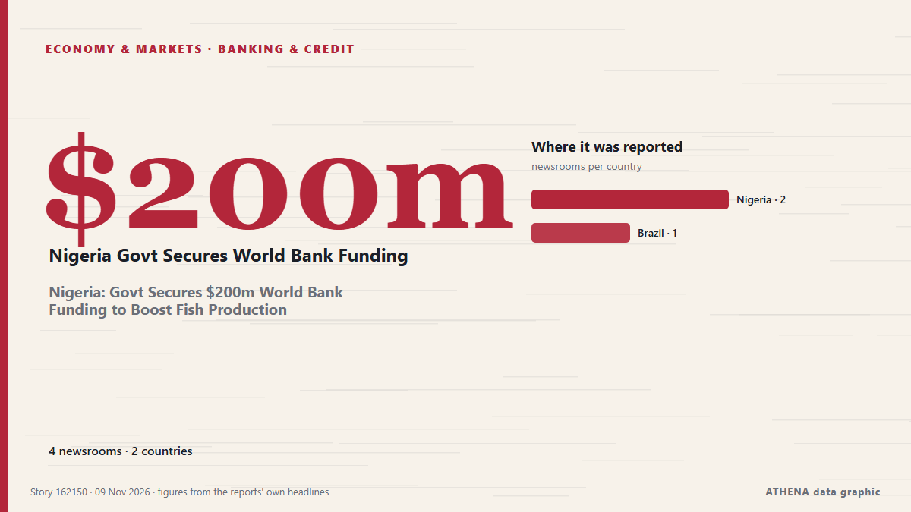

Τράπεζες & πίστη
ΧορηγούμενοΠαρουσιάζεται από  Cybernetics and Artificial Intelligence Lab Welcome to the Cybernetics and Artificial Intelligence Laboratory, established at the Department of Business Administration of the National and Kapodistrian University of Athens. The lab is headed by Professor Dimitrios Thomakos. The lab aims to do research that can be published in top venues. Our research uses tools and methods of Artificial Intelligence, and lies in the following areas: - Forecasting - Decision making - Cyber security - Finance We are always looking forward to collaborating with exceptional students!
Cybernetics and Artificial Intelligence Lab Welcome to the Cybernetics and Artificial Intelligence Laboratory, established at the Department of Business Administration of the National and Kapodistrian University of Athens. The lab is headed by Professor Dimitrios Thomakos. The lab aims to do research that can be published in top venues. Our research uses tools and methods of Artificial Intelligence, and lies in the following areas: - Forecasting - Decision making - Cyber security - Finance We are always looking forward to collaborating with exceptional students!
| 28 Οκτ | 0 |
|---|---|
| 29 Οκτ | 0 |
| 30 Οκτ | 1 |
| 31 Οκτ | 0 |
| 1 Νοε | 0 |
| 2 Νοε | 0 |
| 3 Νοε | 1 |
| 4 Νοε | 2 |
| 5 Νοε | 4 |
| 6 Νοε | 4 |
| 7 Νοε | 5 |
| 8 Νοε | 7 |
| 9 Νοε | 0 |
| 10 Νοε | 0 |
Οι τίτλοι των ειδήσεων παρουσιάζονται στα αγγλικά, όπως δημοσιεύτηκαν.

Nigeria: Govt Secures $200m World Bank Funding to Boost Fish Production
[Vanguard] The Federal Government has secured a $200 million World Bank-backed financing commitment to boost fish production across the country through state governments, as part of efforts to reduce… από AllAfrica
Paraguay Holds Ex-President Peña Before Trial
A judge ordered ex-president Santiago Peña held before trial in the Ueno Bank case as new president Pedro Alliana takes over a shaken Paraguay. από The Rio Times
Paraguay Guaraní Falls as Ueno Bank Fails
Paraguay’s guaraní fell about 12% in eight days after Ueno Bank failed and bond risk rose, but we found no rating cut by Moody’s, S&P or Fitch. από The Rio Times
PM reviews youth business, agriculture loan schemes
Govt allocates Rs292b for youth business, agriculture loans in 2026-27, reserves 30pc of youth loans for women. από Express Tribune
Paraguay’s former president charged after bank collapse
The accounting black hole at Ueno Bank swallows public funds, leaves thousands of citizens without access to their deposits and pushes Paraguay into its worst institutional crisis in years. από Euronews English
Security officer detained after being filmed pointing gun at settlers near West Bank's Jericho
Following the incident, an investigation was opened at the Jordan Valley police station in the Judea and Samaria District on suspicion of unlawful use of a weapon. από The Jerusalem Post
Daycare director, two caregivers indicted over 400 alleged abuse incidents involving 17 infants
According to the indictment, the defendants implemented a series of cruel "punishment methods" at the daycare center. από The Jerusalem Post
World Bank approves $300m to improve learning for 2.6 crore Bangladeshi children
The initiative aims to improve learning outcomes from pre-primary to Grade 5, strengthen teaching and school management, and provide additional support to children falling behind in their studies. από The Business Standard (Bangladesh) (working feed)
Israeli settler attacks on West Bank olive harvest hit record since 2006, UN says
The alleged incident follows an IDF raid on an illegal West Bank outpost on Wednesday. από The Jerusalem Post
Paraguay’s impeached president charged over bank collapse
Asuncion: Paraguayan officials put former President Santiago Peña under house arrest on Friday, shortly after lawmakers impeached him amid a political and financial crisis triggered by the collapse… από Deccan Herald
China's giant pandas make public debut at US zoo
The pair are to be hosted in the southern US facility for the next 10 years. από The Straits Times
IMF chief says any slowdown in AI-driven growth would be factor for central banks
A steep rout in technology stocks on Nov 5 rippled through the markets after the Democrats’ victory in the US midterm elections. από The Straits Times
IDF admits West Bank commander met settler official, denies secret coordination of Jericho outpost
Sources said the head of the IDF Central Command coordinated with settler leaders and sought to keep senior field commanders in the dark until the families had entered the homes in a move that… από Haaretz (English)
Cyberattack Hits French Blood Bank Site but No Blood Products Are Compromised
A cyberattack on several blood banks tried to raise temperatures to extremely high levels but was thwarted before it could do any damage to blood products or samples, French authorities said. από Korea Herald
FG begins N50,000 monthly cash support for poor Nigerians
It warned Nigerians against fraudsters, advising beneficiaries not to disclose their personal identification numbers or Bank Verification Numbers (BVNs) to anyone. από Channels TV
Ueno Bank: How a Digital Lender Triggered Paraguay’s Financial and Political Crisis
Ueno Bank’s resolution left millions of customers temporarily unable to access their accounts and put the savings of individuals, businesses and public institutions at risk. από Colombia One
Pakistan’s external debt doubles over a decade: World Bank
ISLAMABAD: Pakistan’s external debt stock increased 4 percent to USD 135.1 billion in 2025, with multilateral and bilateral creditors accounting for the bulk of the country’s public and publicly… από Business Recorder
Paraguay’s Pena impeached over banking crisis
Santiago Pena had offered his resignation, but lawmakers pressed ahead with impeachment proceedings to strip him of the immunity granted to former presidents. από Free Malaysia Today
French bank hit by €100 million cyber attack recovers some funds
French banking firm Crédit Mutuel Arkéa said it was the target of a cyberattack on Wednesday, with hackers converting over €100 million into cryptocurrency. από Le Monde (English)